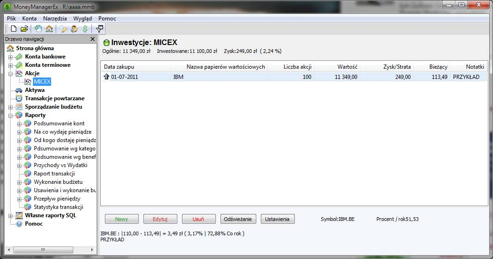

Poniżej ekrany, które towarzyszą tworzeniu i ustawianiu nowego konta.

Pomoc
To jest strona główna dla MMEX. Widać na
niej przegląd bilansów bieżących kont oraz przychody/wydatki
miesiąca. Aby rozpocząć śledzenie inwestycji, najpierw trzeba
utworzyć 'konto inwestycyjne'.
Poniżej ekrany, które towarzyszą tworzeniu i ustawianiu
nowego konta.


Po zakończeniu następuje powrót do
'strony głównej'. Zauważ, że nowe konto inwestycyjne 'ML: Roth
IRA' jest widoczne w węźle 'Akcje' panelu nawigacyjnego po lewej
stronie.
Kliknięcie na nazwie konta spowoduje przeniesienie
do strony konta. Dla zwykłych kont są tu wyświetlane wprowadzone
transakcje. Dla kont inwestycyjnych, tutaj są widoczne i można
edytować posiadane inwestycje w akcje.

Kliknięcie na przycisk 'Nowy' wyświetli
okienko do wprowadzania informacji.

Po wprowadzeniu konto inwestycyjne
będzie wyglądało podobnie do innych kont.

Kliknięcie na węzeł 'Akcje' w drzewku
panelu nawigacyjnego po lewej stronie ekranu wywoła widok wszystkich
kont inwestycyjnych.

'Strona główna' będzie
odzwierciedlała wartość posiadanych akcji.